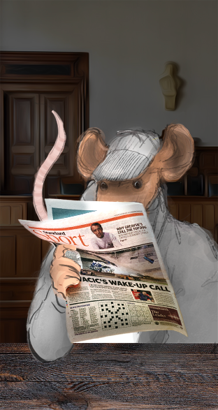
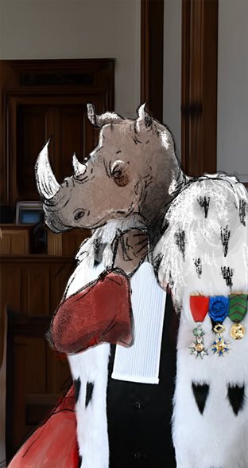

Bienvenue dans BASSE COUR, le jeu où vous allez vous accuser. Incarnez un procureur, un bureaucrate, un avocat ou une enquêtrice et découvrez qui est le coupable.

Le but du jeu
À chaque tour, un juge est nommé et 3 personnes sont accusées. Le juge tire une carte histoire tandis que les accusés piochent chacun une carte mots qu’ils étudient avant de commencer la partie. Le juge lit ensuite les faits et chaque accusé va se défendre à tour de rôle pendant 1min 30s. Le but pour les accusés est de placé le plus de mots de leur carte sans se faire prendre. Si le juge découvre que l’un des mots utilisés fait partie de la liste, le plaidoyer s’arrête immédiatement. Il a droit à 3 essais par plaidoyer. À la fin du tour, on compte le nombre de mots dit par chacun des accusés et celui qui en a le moins prend un jeton accusation. Puis, c’est au tour du juge de prendre sa décision : il donne un autre jeton accusation à l’histoire qu’il a trouvé le moins convaincante. Puis on passe et la manche d’après avec un nouveau juge et de nouvelles cartes. La partie se termine lorsque l’un des joueurs a atteint 5 jetons accusation.
Déroulé d'une partie
La première chose à faire est de distribuer les rôles au hasard. Découvrez votre personnage puis garder la carte face cachée, vous la retournerez lorsque vous utiliserez son atout. Puis, le plus jeune des joueurs commence en tant que juge.
Chaque personnage a un atout qu’il peut utiliser une seule fois lors de la partie. Lorsque le joueur veut utiliser l’atout, il retourne la carte personnage.
Le bureaucrate
La carte du bureaucrate est représentée par un requin. Le Bureaucrate a le droit à la grâce présidentielle pendant 1 manche. Après la décision du juge, si le joueur est accusé, il peut retourner cette carte et utiliser la grâce présidentielle. Ainsi, personne ne prend de jeton accusation donné par le juge. Attention, cet atout n’est pas valable sur les jetons pris par le nombre de mots.
L'enquêtrice
L’enquêtrice est maligne. À la fin des trois plaidoyers, le joueur qui a cette carte peut la retourner et utiliser l’atout. 5 points sont alors ajoutés à son nombre total de mots dits lors de la manche.
L'avocate
L’avocate est très éloquante. Lors de son plaidoyer, et si le juge découvre un de ses mots, le joueur peut continuer son plaidoyer jusqu’à la fin. Les mots trouvés par le juge ne sont pas comptabilisés à la fin de la manche.
Le procureur
L'atout du procureur ne peut être utilisé que lorsque le joueur est le juge de la manche. Au moment de la décision du juge, le joueur retourne la carte et peut alors décider d’accuser tout le monde au lieu d’une seule personne. Ainsi, les 3 accusés prennent un jeton accusation.
Il existe 3 types de cartes dans le jeu : les cartes histoire, les cartes mots et les cartes personnages.